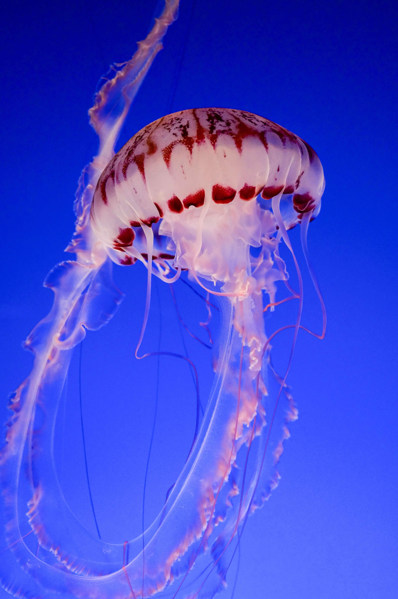

How old is the oldest immortal jellyfish?
You might be curious about the age of the oldest immortal jellyfish, but there is no answer. There has been no long-term observation of turritopsis dohrnii in a laboratory, and there is no other way to determine an individual's age.
Won't they populate the whole earth if they are immortal?
They are only biologically immortal; predators can still eat them (and they certainly are eaten). Nonetheless, because cargo ships can easily transport them worldwide, they are seen in previously unseen territories.
What do they look like?
If you want to see an immortal jellyfish in the ocean, keep in mind that it is very small. Turritopsis dohrnii is bell-shaped and can grow to be 4.5mm (0.18 inch) tall and wide. They are very small creatures. Turritopsis larvae have only 8 tentacles and grow to be 1 mm tall, whereas adults can have up to 90 tentacles. It has a bright red stomach. Dohrnii polyps are made up of stolons and branches that can produce medusa buds.
Are there immortal jellyfishes on sale?
While we have heard of some being sold in Japan, they are extremely rare. It is possible for them to be sold, but we are unaware of any reliable source of nutricula or dohrnii for sale.
